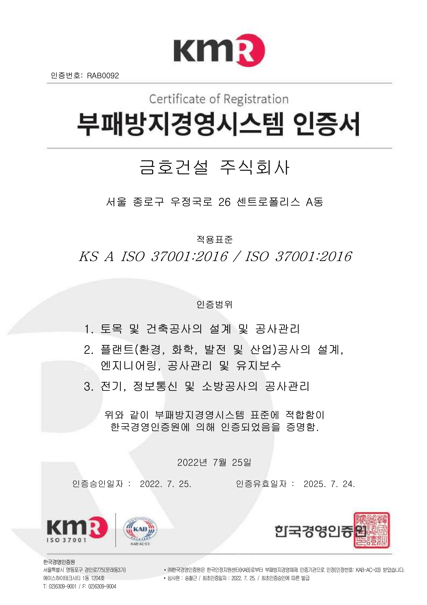
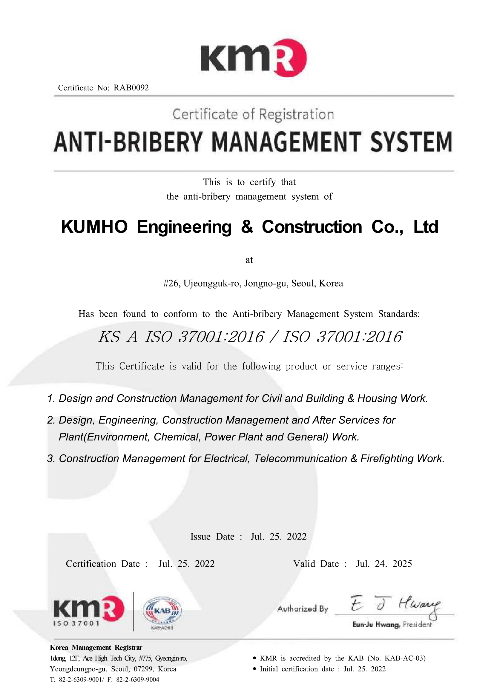

Home > 지속가능경영 > 윤리경영
윤리경영
Think of the people and nature
윤리경영 Slogan
아름다운 기업지수를 개발하여
지속적으로 윤리경영을 제고하고 있습니다.
-
개요

금호건설은 금호아시아나그룹의 5대 핵심경영방침 중 하나인 윤리경영을 토대로 윤리의식을 바탕으로 하는 사회와 모든 이해관계자에게 신뢰 받는 투명하고, 부조리가 없는 기업이미지를 정착시키기 위해 지속적으로 노력하고 있습니다.
금호아시아나는 윤리경영이 기업생존의 필수조건일 뿐 만 아니라 궁극적으로 기업의 핵심 경쟁력이라는 확신 아래 강력한 의지를 갖고 지속적, 효과적으로 윤리경영 을 추진하고 있습니다. 금호아시아나가 추구하는 윤리 경영은 아름다운 기업의 실현을 통해 완성됩니다.
-
규칙
- 공정한 경쟁 및 균등한 처우
- 임직원은 사내외에서 정정당당한 실력으로 공정한 선의의 경쟁을 하여야 하며, 정당한 사유가 없는 한 거래선에 대하여 균등한 대우를 하여야 한다.
- 임직원은 회사와 거래관계에 있거나 거래를 희망하는 업체 또는 개인에 대하여는 공정하게 기회를 제공하되, 품질 및 서비스등 거래관계에 관하여는 회사의 적정 요구수준에 부합하도록 하여야 한다.
- 임직원은 개인적인 이해관계가 있는 업체에 관하여는 상급자에게 사전 보고하여야 하며, 거래시 부당하게 영향력을 행사하여서는 안된다.
- 임직원은 성별, 학력, 종교, 신체장애 및 기타 사유를 이유로 타 임직원에게 불합리한 차별적 대우를 하여서는 안된다.
- 선물, 접대 및 금전거래등
- 임직원은 거래선으로부터 선물, 금품 또는 재정적 편의를 제공받거나 과도한 접대를 받을 수 없다.
- 임직원간에는 과도한 부조나 선물을 제공하여서는 안되며 이유를 불문하고 사내외에서 도박행위를 할 수 없다.
- 임직원간에는 과도한 금전거래나 대출보증을 금한다. 다만, 불가피한 경우는 서면으로 담당임원의 결재를 득하여야 한다.
- 임직원의 책무 및 보상
- 임직원은 최선을 다하여 직무를 수행함으로써 기업가치 극대화에 노력하여야 하며, 회사는 능력과 업적에 따라 적절하게 보상한다.
- 회사는 임직원의 자기계발을 위한 활동을 적극 장려함으로써 회사와 임직원의 성장에 기여한다.
- 임직원은 금연규정을 필히 준수하여 전 사업장의 쾌적한 환경을 유지하여야 한다.
- 회사의 자산은 개인적인 이득을 위하여 사용할 수 없다.
- 회사의 중요한 자산인 제반 노하우나 정보는 회사의 승인없이 외부로 유출시킬 수 없으며, 전 임직원은 이를 보호하기 위하여 최선을 다하여야 한다.
- 임직원은 회사의 주가나 투자자의 의사결정에 영향을 미칠 수 있는 회사에 관한 중요한 정보를 사전 허가없이 유출하거나, 주식투자등 개인의 이득을 위하여 사용할 수 없다.
- 임직원은 불법 소프트웨어를 사용하여서는 안된다.
- 시행
- 금호아시아나그룹의 전 임직원은 본 윤리강령 및 윤리규칙을 준수하여야 하며, 이를 위반하는 경우에는 상벌규정에 의거 인사위원회에 회부하여 중징계 처리한다.
- 개정이력
- 이 지침은 2002년 09월 01일부터 시행한다.(전면 개정)
- 이 지침은 2020년 08월 01일부터 시행한다.(1차 개정)
-
행동준칙
- 전문
- 금호건설은 "기업을 통한 국가공헌 및 사회기여"라는 경영철학과 "세계 일류의 가치 창출 기업, 종업원과 함께 가꾸는 기업, 이웃에게 사랑받는 기업"이라는 경영이념을 바탕으로 "업계 최고 1등의 기업가치 창출"을 지향하고 있다.
- 금호건설이 고객과 사회로부터 존경과 신뢰받는 우리 건설업계의 리더로 거듭나기 위하여는 기업의 사회적 책임을 중시하고, 건전한 기업윤리 및 깨끗한 조직문화를 바탕으로 공정하고 투명한 신뢰경영을 이룩해야 할 것이다.
- 따라서 본 행동준칙은 금호아시아나그룹 윤리강령 및 윤리규칙의 실천 규범으로서 모든 임직원이 공정하고 합리적인 업무수행을 할 수 있도록 행동과 가치판단의 기준 으로 삼는다.
- 제 1장 고객존중
- 항상 고객을 존중하고 고객만족을 위하여 노력하며, 고객의 의견에 귀 기울이고 고객에게 최고의 품질과 서비스를 제공하는 등 고객을 모든 판단과 행동의 최우선 기준으로 삼는다.
- 항상 공손한 자세로 고객을 맞이하고, 예의 바른 태도로 정성껏 응대하여야 하며, 고객의 불만에 대하여는 최대한 신속하고 친절하게 처리하여야 한다.
- 고객에게 허위, 과장, 과대광고를 하지 않으며, 고객에게 유익한 정보를 충분히 제공하여 고객이 합리적인 결정을 할 수 있도록 하여야 한다.
- 불공정 계약행위 등 고객의 이익을 해치는 행위는 하지 않아야 하며, 고객이 원하는 바를 항상 파악하여 이를 회사 업무에 적극 반영하도록 노력하여야 한다.
- 제품의 결함에 의한 피해가 발생하지 않도록 제품의 안전성을 우선적으로 확보하여야 하며, 고객의 안전과 관련하여 사용상 주의하여야 할 내용을 고객이 충분히 이해할 수 있도록 알리는데 노력하여야 한다.
- 고객의 모든 재산은 회사 재산과 동등하게 보호하여야 하며, 고객관련 정보는 고객의 사전 동의없이 외부에 유출하거나 본래 목적과 다른 용도로 사용하지 않도록 하여야 한다.
- 제 2장 주주 및 투자자 존중
- 회사의 경영전반에 대한 정보는 적기에 효과적으로 주주 및 투자자에게 제공하도록 노력하여야 한다.
- 직무상 알게 된 내부 또는 타기업의 정보 등을 이용하여 개인의 이익을 도모하여서는 아니 된다.
- 주주와의 상호 신뢰관계 유지를 위해 기업정보를 정해진 법규에 따라 투명하게 공개하여야 하며, 회계자료 등의처리 및 보고는 회계관련 법규 및 규정 등을 준수하여야 한다.
- 주주의 자산을 보전하고, 보호하며 윤리경영의 적극적 실천을 통하여 건전한 이익이 실현될 수 있도록 노력하여야 한다.
- 제 3장 협력회사와의 공정한 거래
- 협력회사와의 모든 거래는 투명하고 공정한 거래를 보장하여야 하며, 우월적 지위를 이용한 어떠한 형태의 부당한 행위도 하지 않아야 한다.
- 협력회사에게 공평한 기회를 제공하고 합리적인 거래조건을 보장하여 협력회사와의 동반자관계 구축을 위하여 노력한다.
- 협력회사와의 거래시 회사 이익을 우선적으로 고려하되, 부당한 방법으로 협력회사에게 비용을 전가하거나, 일방적으로 거래를 단절하는 일이 없도록 하여야 한다.
- 정당한 사유없이 협력회사에 대하여 차별적 대우를 하지 않아야 하며, 모든 거래는 규정과 절차에 따라 상호 대등한 위치에서 공정하게 이루어져야 한다.
- 우월적 지위를 이용한 어떠한 형태의 부당한 강요행위나 영향력을 행사하지 않아야하며, 협력회사의 경쟁력 강화에 필요한 가능한 모든 지원을 통해 공동의 발전을 추구하여야 한다.
- 협력회사로부터 어떠한 형태의 선물, 금품, 또는 재정적 편의를 요구하거나 수취하여서는 아니 된다.
- 기타 협력회사와 관련하여 아래의 불공정행위를 하지 않아야 한다. 협력회사 직원과의 도박행위 협력회사의 주식이나 재산 직.간접적 취득행위 친인척 또는 자신과 관계있는 협력회사와의 거래행위 협력회사 임직원으로의 이중취업 행위 협력회사 직원과의 금전대차, 연대보증, 투자 등의 행위 입찰 시 경쟁회사의 정보 유출행위
- 제 4장 준법과 공정한 경쟁
- 사회활동 및 상거래와 관련하여 기업이 지켜야 할 기업윤리 및 상도의 등을 성실히 준수하도록 노력하여야 한다.
- 시장경제원칙과 질서를 존중하며, 국내.외 어디서나 선의의 경쟁을 하여야 한다.
- 경쟁은 상호발전의 원동력임을 인식하고 경쟁사와 정당하고 공정한 경쟁을 하도록 노력하여야 한다.
- 모든 사업은 환경 친화적으로 수행하고, 환경관련 제반법규를 준수하여 환경지킴이로서 환경보호활동에 적극적으로 참여하여야 한다.
- 안전관리와 사고예방을 위해 최선의 노력을 다하여야 한다.
- 제5장 임직원의 윤리경영
- 임직원은 각자가 금호건설을 대표한다는 주인의식을 가지고 행동하며, 금호건설인으로서의 명예와 품위를 지키도록 노력하여야 한다.
- 임직원은 올바른 가치관을 가지고 부단한 자기혁신을 통하여 비효율적이고 비합리적인 업무관행을 개선하고, 화합과 팀웍에 의한 건전한 기업문화 정립을 위하여 노력하여야 한다.
- 임직원은 업무의 효과와 효율을 높이기 위하여 개인 및 부서간의 이해관계를 초월하여 상하. 동료. 팀간의 정보와 지식의 교류를 통하여 회사의 공동목표 달성을 위하여 노력하여야 한다.
- 임직원은 주어진 권한과 책임 하에 직무에 최선을 다하며, 제반법규와 규정.제도를 준수하고 개인적 이익을 위해 직권남용,허위, 과장, 은폐, 누설행위 등을 하지 않아야한다.
- 임직원 상호간에는 선물제공 행위를 하지 않도록 한다. 단, 상급자가 하급자에게 선물을 제공하거나 팀 직원간의 사기진작을 위한 생일, 기념일 등의 선물은 예외로 인정한다.
- 임직원간에는 과도한 금전거래나 대출보증을 금하며, 사내.외에서 도박행위를 하여서는 아니 된다.
- 임직원은 상호 존중하며, 직장생활에 필요한 기본예의를 지켜야 하며, 불손한 언행등 타 임직원에 대한 비방이나 음해 행위를 하여서는 아니 된다.
- 임직원은 회사의 허가없이 회사업무 이외에 다른 직업에 종사할 수 없으며, 회사이익에 반하여 자기 영리를 추구하거나 타인에게 부당한 이익을 주는 행위를 하여서는 아니 된다.
- 임직원간에는 법규 및 회사규정에 위배되는 부당한 업무지시를 하지 않아야 하며, 모든 임직원은 윤리경영 실천서약서를 제출하여야 한다.
- 모든 임직원은 금호아시아나그룹의 윤리강령 및 윤리규칙, 이를 실천하기 위한 본 행동준칙 등을 성실히 준수하여야 한다.
- 모든 임직원은 금호아시아나그룹의 윤리강령 및 윤리규칙, 행동준칙을 위반하였거나 타인의 위반사실을 알게 된 경우에는 반드시 윤리경영위원회나 윤리경영 실천사무국으로 신속히 보고하여야 한다.
- 제6장 기업의 사회적 책임
- 기업의 사회적 책임은 사회에 대한 자발적 봉사에서 시작함을 인식하고 각종 사회봉사활동, 안전환경활동,문화지원활동 등 사회공헌활동에 적극 동참하여야 한다.
- 성실한 납세의무 이행과 고용창출로 복지사회 건설에 기여하여야 한다.
- 합리적으로 사업을 수행하며, 국민경제에 해를 끼치는 일체의 행위를 하지 않아야한다.
- 각 사업장에 속해 있는 지역의 주민을 위해 현장 여건에 맞는 각종 사회공헌활동을 추진함으로서 회사와 지역사회의 일체감을 증진하도록 노력하여야 한다.
- 기업시민으로서 국가정책과 제반법규를 존중하며, 사회적 책임을 다하도록 노력하여야 한다.
- 회사는 정치에 관여하지 않으며, 회사 내 어떠한 정치활동도 하지 않아야 한다.
- 부칙
- 시행본 윤리경영 행동준칙은 2004년 4월 1일부터 시행한다.
- 포상 및 징계윤리경영활동과 관련하여 공로가 있는 임직원에 대하여는 윤리경영 위원회를 통하여 포상을 실시하고, 위반사항이 있는 임직원은 윤리경영위원회에 회부하여 징계한다.
- 자문과 해석윤리경영 행동준칙과 관련하여 해석에 분쟁이 있거나 의문사항 및 규정되지 않은 사항에 대하여는 윤리경영위원회에 자문을 구하고 윤리경영위원회의 해석과 결정에따른다.
- 타 규정과의 관계본 윤리경영 행동준칙은 금호아시아나그룹 윤리강령과 윤리규칙의 세부적인 행동지침으로 삼으며, 윤리강령과 윤리규칙, 행동준칙은 회사 내 다른 규정에 최우선한다.
- 신고제도신고제도의 원활한 운영과 신고자 보호를 위해 가능한 모든 조치를 취하며, 자기신고의 경우 불이익의 배제를 보장한다. 신고된 금전, 선물 등은 내부절차에 따라 반환 또는 사회공헌활동에 활용한다.
-
부패방지 경영방침
 - 회사의 모든 임직원은 “부정청탁 및 금품 등 수수의 금지에 관한 법률”등 부패방지 관련 법규 및 사내 지침 등을 숙지하고, 어떠한 부패행위도 하지 않으며, 부패방지경영시스템을 준수하여 부패 발생을 방지한다.
- 회사는 부패방지경영을 위해 부패방지경영시스템을 구축·실행하며 이를 지속적으로 개선한다.
- 회사의 임직원은 부패행위를 인지하게 되는 경우 지체 없이 내부신고 절차를 통해 회사에 알리고, 회사는 관련 내용 및 신고자의 신상정보를 비밀로 유지하여 신고자가 불이익을 받지 않도록 한다.
- 회사는 임직원이 부패방지경영시스템을 준수하지 못하여 부패행위가 발생하였다면 회사 규정에 따라 조치를 취하도록 한다.